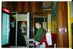
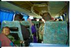
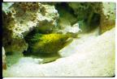
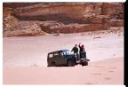

|
Le premier pays de notre ballade autour du monde... Ce qui frappe surtout ici, c'est l'extrême gentillesse des jordaniens. Dès qu'ils pensent pouvoir nous aider, ils s'arrêtent et proposent leur aide, ce sont des "welcome" de bienvenue tres sincères qui nous attendent dans chaque échoppe et des sourires très gentils à chaque coin de rue. Des petits gestes tout simples, comme ce monsieur qui nous offre une pomme sur le marché, heureux d'acueillir des français dans son pays.
En plus, ce qui ne ne gâte rien, ils sont toujours en train de se marrer, je n'en ai pas vu s'enerver, même au volant! Ils conduisent tranquillement sans accelérations intempestives, se cèdent le passage, ou plutôt laissent celui qui cherche à s'intégrer à la circulation le faire, sans se fâcher. Bref, tout est calme même au centre ville d'Amman la capitale.
Voir le trajet en détail (étapes, durée, coût)
| L'arrivée à Amman |
|

|
Lundi 5 février, Amman -
Après une rapide escale à Vienne, nous arrivons à Amman à
15 H. Cela cafouille un peu a l'aéroport, on voit deux ou
trois personnes avant de trouver celui qui veut bien tamponner
nos visas.
Lire la suite ...
|
| La visite de Jerash |
|
|
Mardi 6 février, Jerash, 50 kilomètre de Amman -
Journée vieilles pierres à Jerash! Tres joli site dont certaines
parties datent du 4ème siècle avant JC.
Lire la suite ...
|
| Du côté de la mer morte |
|
|
Mercredi 07 Février, Amman vers la mer morte -
Khaled ne s'est pas reveillé, Lionel s'en est chargé et nous
sommes sortis à la recherche d'un petit-dejeuner le temps
qu'il se prépare. Une ruelle à gauche.
Lire la suite ...
|
| Aquaba |
|

|
Jeudi 8 Février, bus de Amman vers Aquaba -
On s'est reveillés à 11H! Il est temps de se mettre à l'heure
locale et pas seulement à l'heure des vacances!
Lire la suite ...
|
| Plongées en mer Rouge |
|

|
Dimanche 11 Février -
Les petits poissons dans l'eau nagent aussi bien que les
gros! Plongée au paradis des plongeurs: la mer rouge.
Lire la suite ...
|
| Le Wadi Rum |
|

|
Lundi 12 Février -
Nos sacs sont prêts, on quitte Aqaba et sa douceur nonchalante
comme on dit dans les guides (et c'est tellement vrai). Direction
le Wadi rum (prononcer wadiroum, c'est pas un apero!), c'est-à-dire
le désert Sud-Jordanien à environ 70 Km d'Aqaba.
Lire la suite ...
|
| Petra |
|
|
Mardi 13 Février, Petra -
Minibus, hôtel, billet d'entrée (hyper cher: 250 FF pour
2 jours! mais bon, ça vaut le coup), nous voici à Petra.
Lire la suite ...
|
| Retour vers Amman |

|
Jeudi 15 Février, Petra vers Amman -
Adieu Petra la rose, bonjour Amman la... j'en sais rien.
La chaleureuse on n'a qu'à dire, ou la blanche.
Lire la suite ...
|
La suite du voyage : L'inde
|